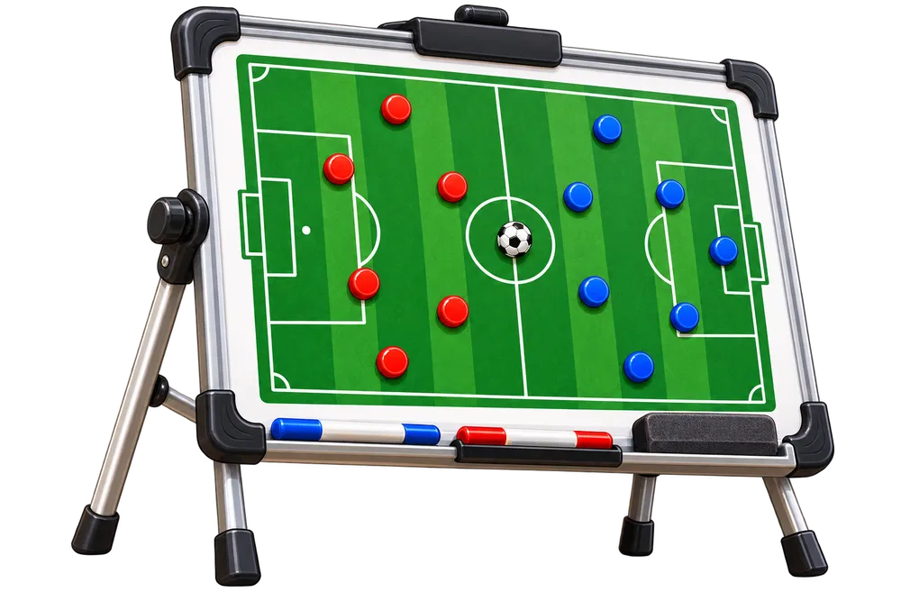

⚽ Лига знаний
⚽ Голы: 0
Тема 6. Делители и кратные
Математика · 5 класс · игровая тренировка
Егор, сегодня тренируем математическую точность.
Разберёмся, чем делитель отличается от кратного, а затем закрепим тему в играх.
Разберёмся, чем делитель отличается от кратного, а затем закрепим тему в играх.
1. Видео2. Делители3. Игра4. Кратные5. Игра6. Практика7. Мини-тест
🎬 Посмотри видео
- Что называют делителем натурального числа?
- Как найти кратные данного числа?
- Чем количество делителей отличается от количества кратных?
⚽ Делители
Делитель
Число a — делитель числа b, если b делится на a без остатка.
24 : 6 = 4 → 6 — делитель 24

Ищем парами1·36, 2·18, 3·12, 4·9, 6·6
🎮 Тренировка 1
🥅 Кратные
Кратное
Кратные 6 получаются умножением 6 на натуральные числа.
6, 12, 18, 24, 30, …
Маршрут кратных
Двигайся по значениям 6 → 12 → 18 → 24 → 30.
🎮 Тренировка 2
⚽ Готов к практике?
Теорию и тренировки прошли. Теперь переходим к вопросам — они откроются на отдельной странице.